นกแก้วมาคอว์
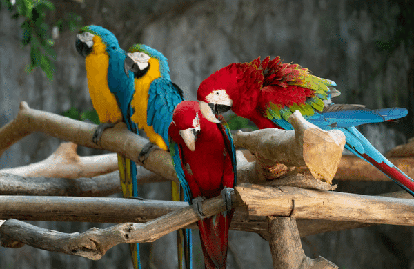
ลักษณะ: ขนาดใหญ่ สีสันสดใส (น้ำเงิน, เหลือง, แดง) ฉลาดมาก ฝึกพูดได้
นิสัย: ขี้เล่น ชอบเข้าสังคม
นกค๊อกคาเทล
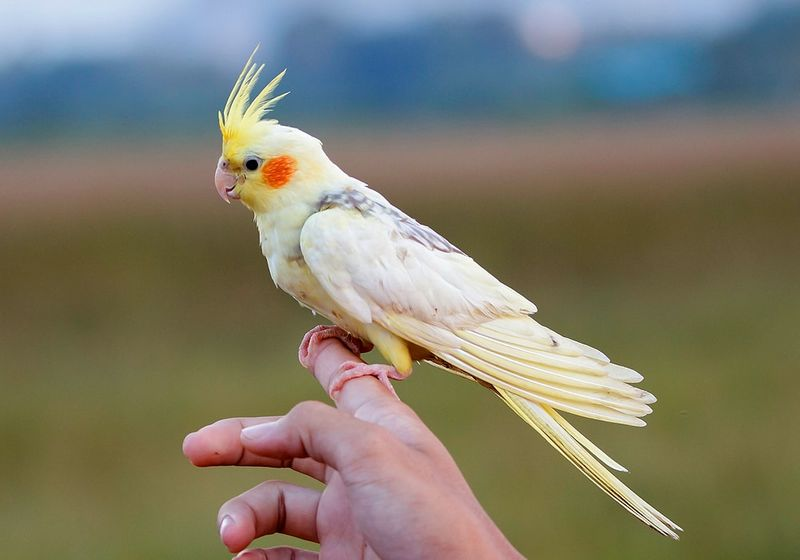
ลักษณะ: ขนาดเล็กถึงกลาง หงอนตั้งบนหัว สีเหลือง-เทา
นิสัย: รักเสียงเพลง เรียนรู้เสียงและเลียนแบบง่าย
นกหงส์หยก
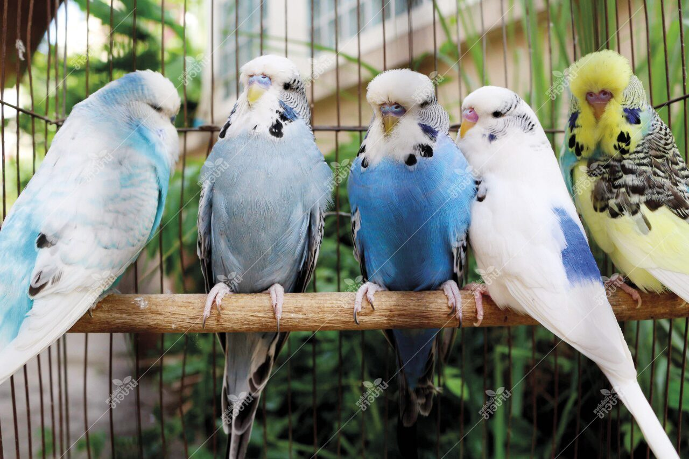
ลักษณะ: ขนาดเล็ก สีสันสดใส (เขียว, น้ำเงิน, เหลือง)
นิสัย: น่ารัก ฝึกพูดง่าย รักความสนุก
นกฟินช์
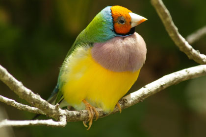
ลักษณะ: ตัวเล็ก สีเทา-ขาว มีลายจุดหรือริ้วบริเวณหน้าอก
นิสัย: คล่องแคล่ว รักอิสระ
นกยูง
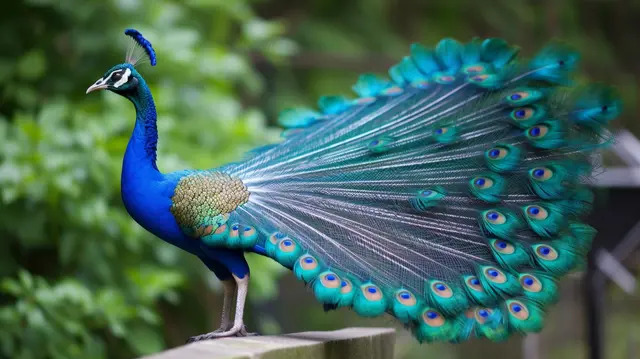
ลักษณะ: ขนาดใหญ่ หางยาวสวยงาม สีฟ้าเขียวและลายตาเด่น
นิสัย: ขี้อวด มักแสดงขนหางเพื่อดึงดูดคู่
นกกระตั้ว
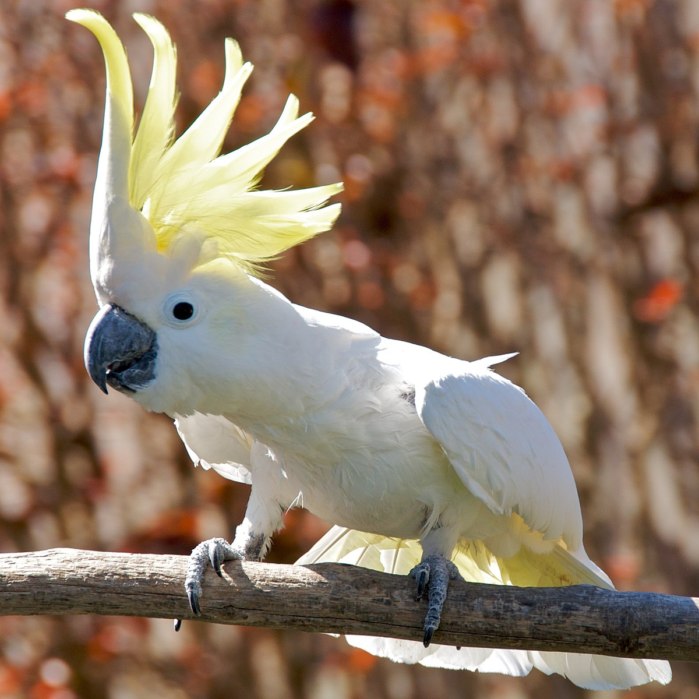
ลักษณะ: ขนาดกลางถึงใหญ่ หงอนเด่น สีขาวหรือสีชมพู
นิสัย: ขี้เล่น รักการเข้าสังคมและเจ้าของ
นกเลิฟเบิร์ด
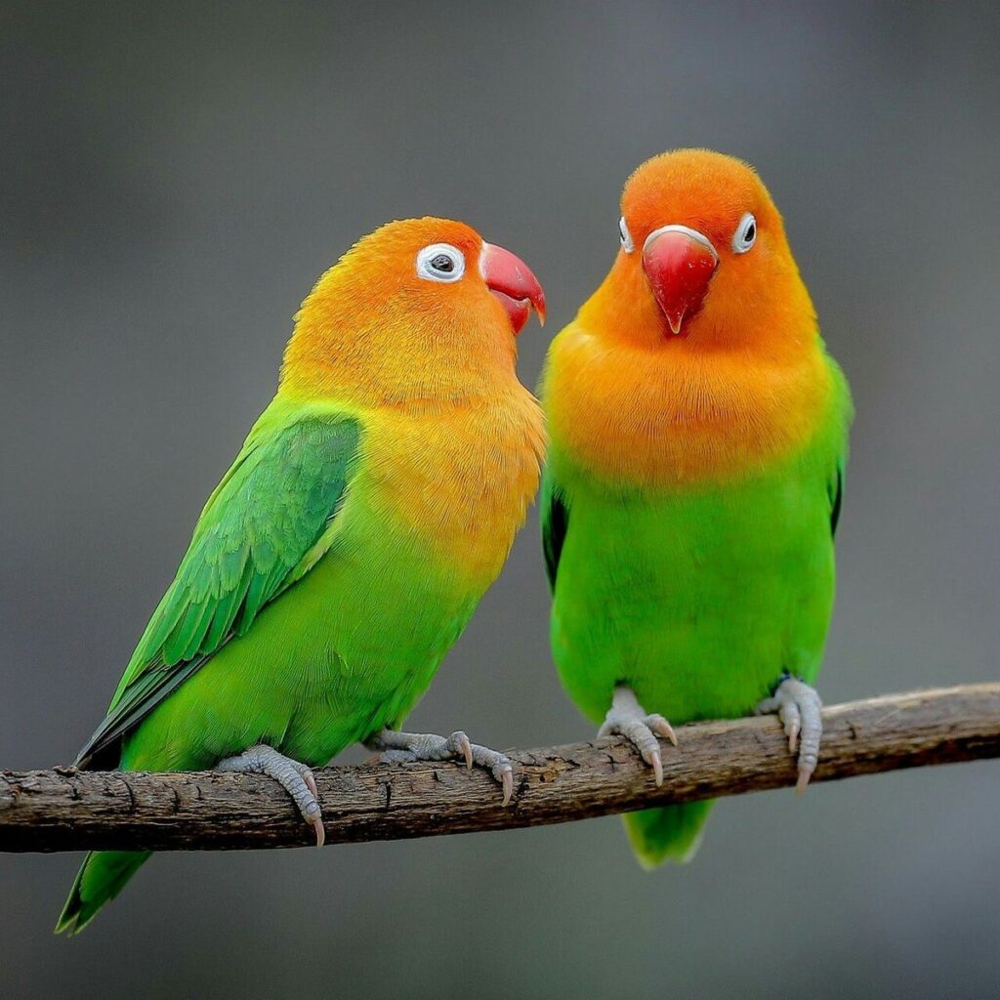
ลักษณะ: ขนาดเล็ก สีสันสดใส เช่น เขียว-แดง, เหลือง-ส้ม
นิสัย: รักคู่ ใช้เวลาส่วนใหญ่กับคู่ของมัน
นกแก้วริงเน็ค
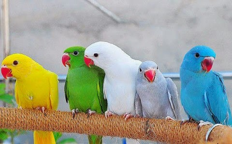
ลักษณะ: สีเขียวสด มีวงแหวนสีดำหรือแดงรอบคอในตัวผู้
นิสัย: ฝึกง่าย ชอบเลียนเสียง
นกฮูก
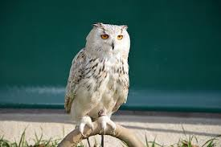
ลักษณะ: ดวงตาโต หน้าแบน ขนสีน้ำตาลหรือเทา
นิสัย: รักสงบ มักออกหากินเวลากลางคืน
นกเหยี่ยว
ลักษณะ: ปีกยาวแหลม บินเร็ว มีเล็บและปากแข็งแรง
นิสัย: เป็นนักล่าที่ฉลาดและปราดเปรียว
นกกระทุง
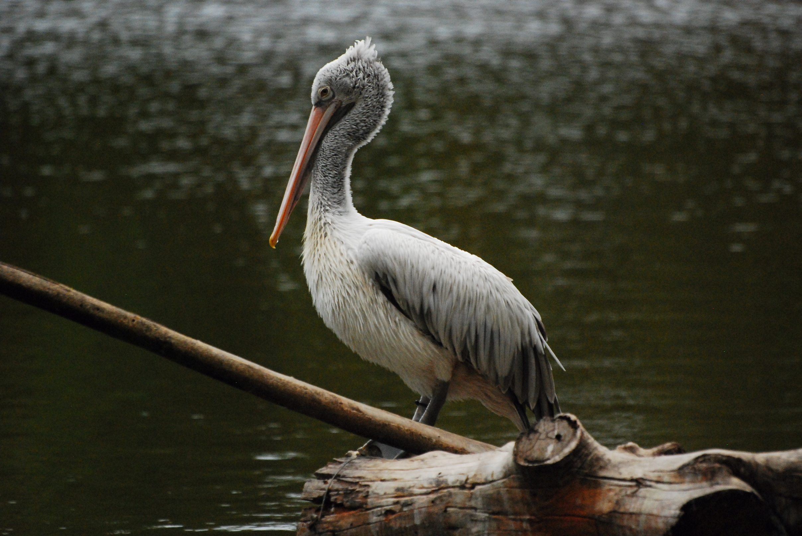
ลักษณะ: ตัวใหญ่ ปากยาวมีกระเป๋าใต้ปากสำหรับจับปลา
นิสัย: อยู่รวมกันเป็นฝูง ชอบอาศัยใกล้น้ำ
นกกางเขนดง
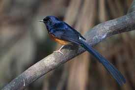
ลักษณะ: สีขาว-ดำสลับ ตัวขนาดกลาง
นิสัย: ฉลาด ชอบสะสมสิ่งของ